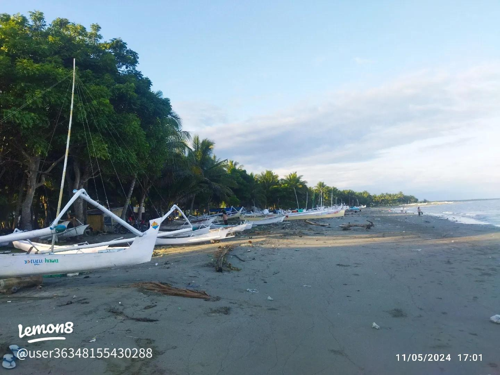
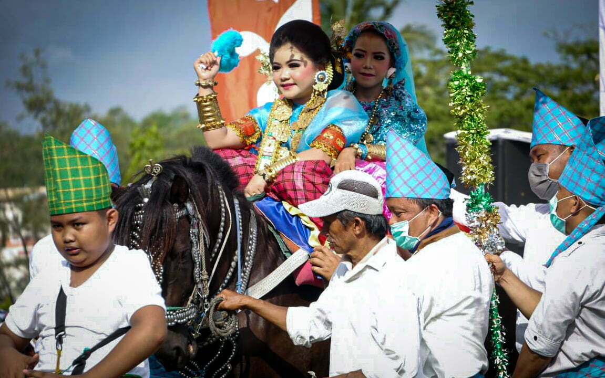

📍 Cuaca Real-Time BMKG (Campalagian)
Memuat data cuaca langsung dari BMKG...
Temukan perpaduan keindahan wisata religi bersejarah, pesona pesisir Mandar, dan keramahan budaya lokal di Sulawesi Barat.
Jelajahi LapeoDestinasi menarik yang wajib Anda kunjungi saat berada di Desa Lapeo
Pusat ziarah dan wisata religi Sulawesi Barat yang ikonik, didirikan oleh ulama besar penyebar Islam di tanah Mandar, KH. Muhammad Thahir.
Lokasi Google Maps
Nikmati pesona keindahan pesisir pantai dengan hamparan pasir, deburan ombak Selat Makassar yang syahdu, serta pemandangan matahari terbenam.
Lokasi Google Maps
Ketahui asal-usul nama Lapeo yang bermakna "tertiup angin laut" hingga kemegahan adat lokal Sayyang Pattu'du (kuda menari) yang menawan.
Cari Tahu Fakta UnikKata "Lapeo" konon berakar dari kata tapio yang memiliki arti tertiup angin laut. Berdasarkan kisah lisan turun-temurun, dahulu kala terdapat seorang nelayan tradisional yang terdampar di pesisir ini. Ia kemudian memilih beristirahat di bawah sebuah pohon sembari menggantungkan ikan hasil tangkapannya. Sejak peristiwa tersebut, sang nelayan menyebut dan menandai wilayah pemukiman ini dengan nama Lapio yang kini melekat menjadi Lapeo.
Desa Lapeo dikenal luas sebagai salah satu episentrum utama pelestarian budaya asli suku Mandar, yaitu Sayyang Pattu'du (Kuda Menari). Tradisi luhur ini merupakan ritual arak-arakan menggunakan sekelompok kuda terlatih yang telah dihias dengan pernak-pernik pakaian adat. Diiringi oleh alunan rancak tabuhan gendang tradisional serta lantunan ayat suci Al-Qur'an, adat ini digelar meriah khusus sebagai bentuk apresiasi dan penghargaan untuk merayakan anak-anak setempat yang telah mengkhatamkan kitab suci.
Memulai perjalanan dengan mengunjungi Masjid Nuruttaubah Lapeo, berziarah ke makam Imam Lapeo, dan mengagumi kemegahan arsitektur serta menara masjid.
Menunaikan ibadah shalat Dzuhur berjamaah di masjid, dilanjutkan makan siang mencicipi berbagai hidangan kuliner laut khas Mandar yang segar di sekitar Campalagian.
Bertolak menuju Pantai Baqbatoa untuk bersantai menikmati hembusan angin laut Selat Makassar, menyusuri pesisir pantai, dan menunggu keindahan panorama sunset.